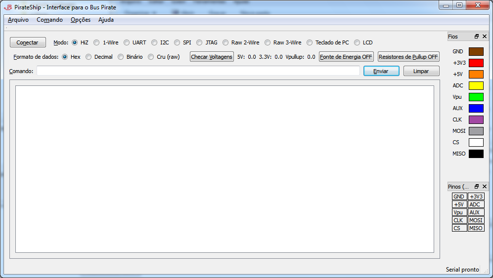

Basicamente o que ele faz é permitir escolher opções e setar modos mais facilmente, através de uma interface gráfica, mas tem alguns recursos bastante interessantes.
A primeira versão do programa foi feito utilizando o toolkit gráfico Qt, que permitiu um desenvolvimento muito rápido.
O recurso mais interessante, além de armazenar comandos anteriores para facilitar o manuseio de protocolos repetitivos, é poder configurar um intervalo no qual um comando será repetido automaticamente. Isto é extremamente útil na avaliação de sensores, em que um dado pode oferecer pequenas variações, que são difíceis de perceber quando se tem que digitar o mesmo comando várias vezes, e para cada vez procurar o valor em uma posição diferente da tela do terminal.
Como qualquer página de programa que se preste, é necessário um screenshot:

Não esqueça de fazer o download abaixo. O programa pode ser usado em inglês e português do Brasil (auto-identificado a partir do sistema).
Update:
24/04/2010: Lançada a versão 1.1 do PirateShip. Esta versão inclui um sistema rudimentar de plugins, opção para inverter a ordem as cores do cabo (pra quem prefere colocar o cabo invertido) e uma versão pra Linux! Na seção de arquivos você pode encontrar a versão nova compilada tanto estaticamente (sem dependências, mas sem plugins) e dinamicamente (há dependências, em um arquivo também disponiblizado e já há um plugin pra um sensor magnetômetro HMC5843). Como a versão Linux foi compilada dinamicamente, também há um arquivo com bibliotecas do Qt 4.6.2 (o PirateShip requer o Qt > 4.6, que nem todas as distros possuem).